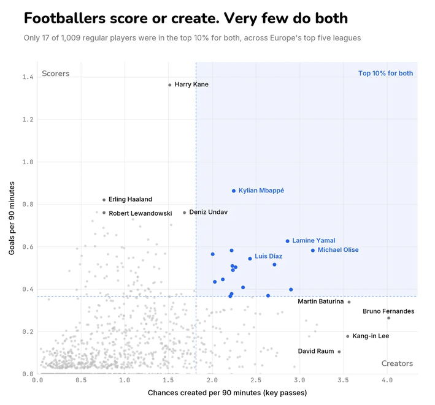
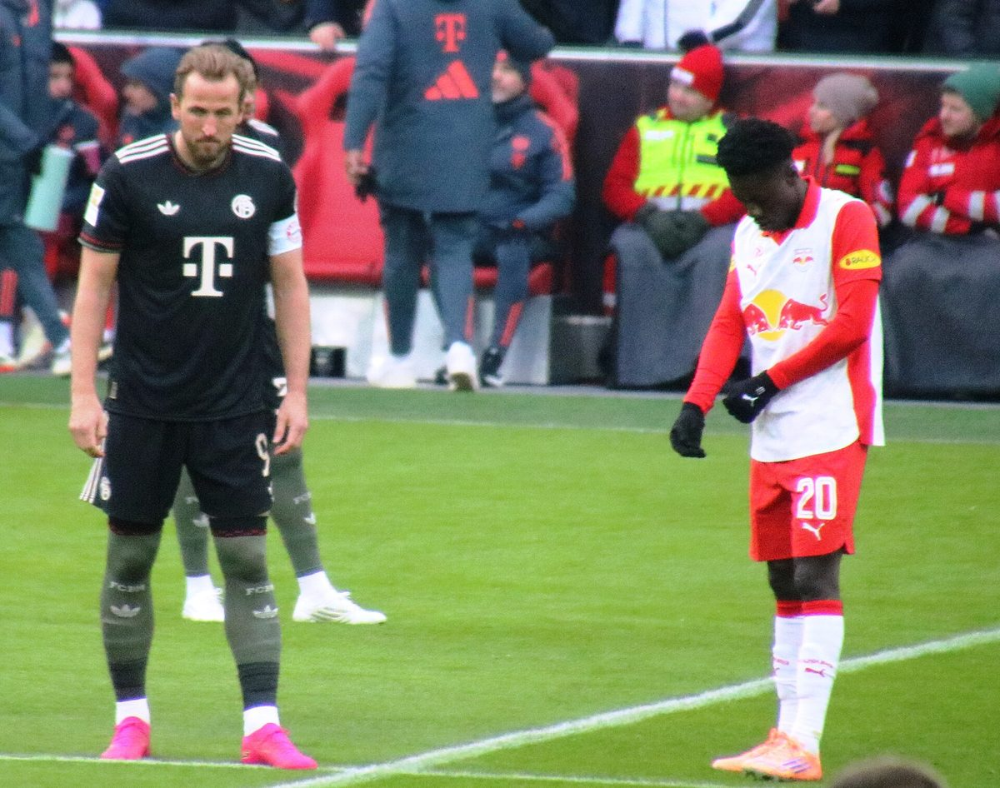
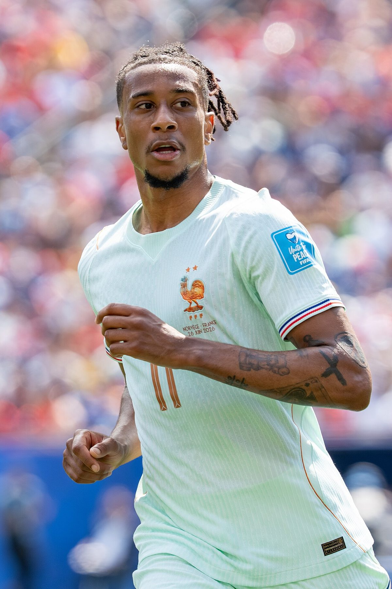

Score or create?
Some footballers put the ball in the net. Others set it up. Out of more than a thousand players in Europe's top leagues last season, only 17 were brilliant at both.
Watch any football match closely and you'll notice that attackers come in two flavours. Some are scorers: they lurk near the goal, waiting for the ball, and when it arrives they put it in the net. Others are creators: they drift around, spot the clever pass and set up the chance for somebody else. Plenty of footballers are good at one of those things. Hardly any are brilliant at both.
The chart below proves it. It plots every regular player in Europe's top five leagues (England, Spain, Germany, Italy and France) from the 2025–26 season: 1,009 of them. How far up a player sits shows how often he scores. How far right he sits shows how many chances he creates for teammates. And it tells a very clear story.

How to read itTwo numbers per player
Each dot on the chart is worked out from two numbers. The first is goals per 90 minutes: how many goals a player scores, on average, for every full match he plays. The second is chances created per 90 minutes. A chance created (statisticians call it a "key pass") is a pass that leads straight to a teammate having a shot. It doesn't matter whether the shot goes in; what counts is that the pass set it up.
Why "per 90 minutes"?
Imagine two players. One scores 10 goals in 30 full matches. The other scores 10 goals in 15 matches, because he was injured for half the season. Who's the better scorer? Simply counting goals says they're equal, which isn't fair. So statisticians divide by the minutes played and multiply by 90 (one full match). The first player scores 0.33 goals per 90; the second scores 0.67, twice as often. Now we're comparing fairly.
The two dotted lines mark the top 10%. Any player above the flat line scored more often than nine out of ten others. Any player to the right of the upright line created more chances than nine out of ten others. That splits the chart into zones, and we've redrawn it below with just the famous names, so you can see who lives where.
Scorers, creators and the rare few who do both
Top leftThe scorers

_08.jpg){kind=link}
Look at the dot right at the top. That's Harry Kane, England's captain, who scored 36 Bundesliga goals for Bayern Munich last season in 2,382 minutes. That works out at 1.36 goals per 90 minutes, more than one goal every single game, and he finished as Germany's top scorer for the third season running. (We checked the maths, by the way. It's how we know the chart shows the 2025–26 league season.) He's a truly prolific striker.
Nearby are Erling Haaland (27 Premier League goals for Manchester City, and the Golden Boot), Robert Lewandowski (Barcelona's striker last season) and Deniz Undav of Stuttgart. These players are deadly in the penalty area, but they create fewer chances for others. That isn't a weakness. It's their job. Their teammates create; they finish.
Top rightThe magnificent 17


Now the rare zone: top 10% for scoring and top 10% for creating. Only 17 players made it. The highest is Kylian Mbappé, who scored 25 La Liga goals for Real Madrid and won the Pichichi trophy for Spain's top scorer. Lamine Yamal of Barcelona, who scored 16 league goals and set up 11 more at the age of 18, is there too. So is Luis Díaz of Bayern.
And then there's Michael Olise, Kane's teammate at Bayern, who sits furthest right of anyone in the "both" zone. He scored 15 Bundesliga goals and made 19 assists last season, which explains a lot about why Kane scored so many. Players like Olise and Yamal are versatile: they can beat a defender, pick a pass or finish a move themselves. Defenders don't know what's coming, which is exactly why they're so hard to stop.
Bottom rightThe creators, and one outlier
Along the bottom right are players who set up far more goals than they score: Martin Baturina of Como in Italy, David Raum, the RB Leipzig full-back with a wand of a left foot, and Kang-in Lee, who was at Paris Saint-Germain last season. (He's since joined Atlético Madrid, and he started against United on Tuesday. Small world.)
But one dot sits out on its own, further right than every other player in Europe's top five leagues. In statistics, a dot like that is called an outlier. And this outlier plays for Manchester United.


Bruno Fernandes created about four chances for every 90 minutes he played last season. Think about that. Every single match, on average, United's captain set up four shots for his teammates. On the final day of the season, his corner was headed in by Patrick Dorgu in a 3–0 win at Brighton. It was his 21st assist of the league season, the most anyone has ever made in one Premier League season, beating the record of 20 shared by Thierry Henry of Arsenal and Kevin De Bruyne of Manchester City. He was named the Premier League's Player of the Season and the Football Writers' Footballer of the Year.
Most assists in a Premier League season
About four chances a game. Nobody in Europe's top five leagues created more.
What the chart says about Bruno FernandesMaths cornerWhy 17 is a small number
Here's a puzzle. If 10% of players are top scorers and 10% are top creators, how many would you expect to be both? It's not 10%, and it's not 20%. If scoring and creating had nothing to do with each other, you'd expect 10% of 10%, which is 1%. One player in every hundred.
10% of 10% = 1%
Out of 1,009 players, that would be about 10. The real number was 17, a bit more than chance alone would give you. So being a great scorer makes you slightly more likely to be a great creator, probably because the best attackers get the ball in dangerous places more often. But 17 out of 1,009 is still a tiny proportion: fewer than two players in every hundred. Doing both is very, very hard.
What kind of player are you?
Next time you play at the park or at training, keep a secret count. How many goals did you score? How many times did your pass lead to a shot? If the first number is bigger, you're a scorer, like Kane. If the second is bigger, you're a creator, like Bruno. If both are big, congratulations: you're in the magnificent 17. Either way, remember that a team needs both kinds. Kane needs his Olise. Every scorer needs a creator.
The chart covers league matches only, in the 2025–26 season, for players with enough minutes to count as "regulars". We checked several players' figures against their published season totals.